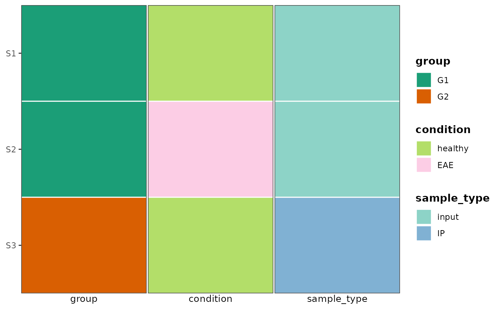
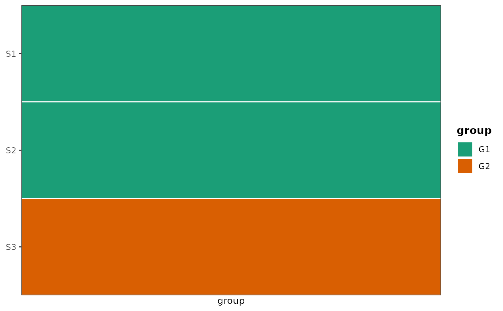
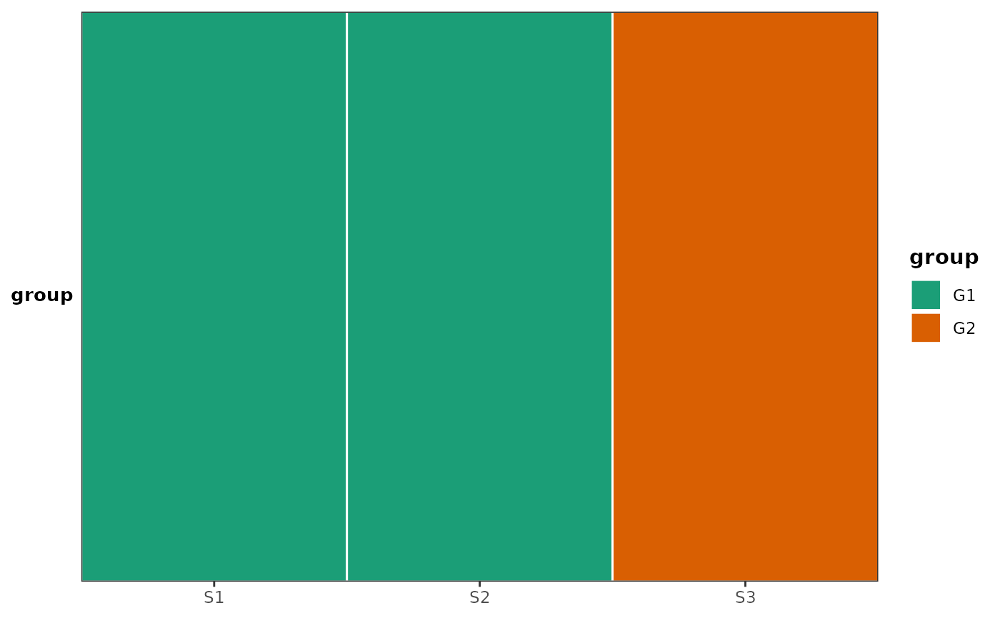
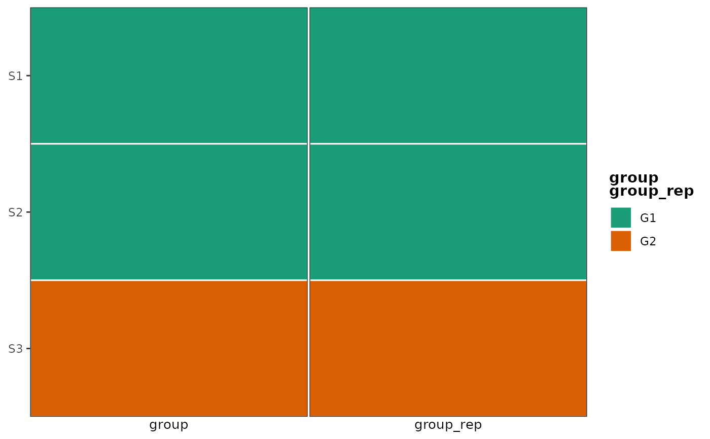

Displays one vertical strip per covariate using
geom_tile, with all strips combined via
wrap_plots. Because the output is a standard
ggplot2/patchwork object it aligns naturally with other ggplots
(e.g. when combined with | or / from patchwork).
Only categorical (named-vector colors) covariates are supported.
Usage
plot_covariate_heatmap(
dataset,
color_map,
row_id_var = NULL,
show_row_names = TRUE,
show_column_names = TRUE,
row_names_side = "left",
plot_spacing = 0.5,
legend_side = "left",
legend_title = NULL,
column_labels_side = "bottom",
horizontal = FALSE,
merge_legends = FALSE,
collect_guides = TRUE,
x_title = NULL,
return_details = FALSE
)Arguments
- dataset
A data frame. Must contain all columns named in
color_mapand, if supplied,row_id_var.- color_map
A named list specifying which covariates to plot and their color mappings. Each name must be a column in
dataset. Each element must be a named character vector mapping factor levels to hex colors. Any levels present in the data but absent from the vector receive auto-generated colors.- row_id_var
Character. Column in
datasetused as row labels (y-axis). DefaultNULLuses1:nrow(dataset).- show_row_names
Logical. Whether to display sample labels.
- show_column_names
Logical. Whether to display covariate name labels (column labels). When
horizontal = FALSE: labels appear as plot titles (column_labels_side = "top") or captions (column_labels_side = "bottom"). Whenhorizontal = TRUE: the covariate name appears on the y-axis;column_labels_sidecontrols left/right placement. Ignored whenshow_column_names = FALSE. DefaultTRUE.- row_names_side
"left"or"right". Whenhorizontal = FALSE, row names are shown on the first strip ("left") or the last strip ("right"). Ignored whenhorizontal = TRUE; in that case, whenshow_row_names = TRUE, labels appear on the bottom (last) strip. Default"left".- plot_spacing
Numeric (mm). Gap between adjacent covariate strips. Default
0.5.- legend_side
Character. Position of the legends. One of
"left","right","top", or"bottom". Default"left".- legend_title
NULL, a single character string, or a named character vector. When NULL (default) the legend title is the covariate name (or combined covariate names when
merge_legends = TRUE). If a single string is supplied it is used for all legends. If a named vector is supplied, entries matching covariate names override titles for those covariates.- column_labels_side
Character. Where to show the covariate name labels. When
horizontal = FALSE:"top"or"bottom"(default). Whenhorizontal = TRUE:"left"(default) places the label on the left y-axis;"right"places it on the right y-axis by settingposition = "right"on the continuous y scale.- horizontal
Logical. When
TRUEthe layout is transposed: samples appear on the x-axis and strips are stacked vertically so the plot can be combined below a main ggplot. DefaultFALSE.- merge_legends
Logical. When
TRUE, strips sharing the exact same color mapping show a legend only on the first occurrence; that legend's title joins the covariate names with"\n". DefaultFALSE.- collect_guides
Logical. When
TRUE(default), legends from all strips are collected inside the returned patchwork usingplot_layout(guides = "collect")and positioned according tolegend_side. Set toFALSEwhen you intend to embed the result inside an outer patchwork composition that performs its own guide collection (e.g.wrap_plots(..., guides = "collect")); this prevents the nestedplot_layout(guides = "collect")from blocking the outer collection.- x_title
Character scalar or NULL. When
horizontal = TRUE, sets the x-axis title on the bottom-most strip only. Use this instead of\& ggplot2::labs(x = ...)which would apply the title to every strip. DefaultNULL(no x-axis title).- return_details
Logical. If
TRUE, returns a named list with elementsht(thepatchworkobject) andfinal_colors(the resolved color map). DefaultFALSE.
Value
Invisibly returns a wrap_plots
(patchwork) object, or a named list with elements ht and
final_colors when return_details = TRUE.
Examples
ggplot2::theme_set(theme_bw2())
data(ex_data_heatmap)
# Build a one-row-per-sample metadata frame
sample_meta <- ex_data_heatmap |>
dplyr::select(sample, group, condition, sample_type) |>
dplyr::distinct()
# Multiple categorical covariates
plot_covariate_heatmap(
dataset = sample_meta,
color_map = list(
group = c(G1 = "#1b9e77", G2 = "#d95f02"),
condition = c(healthy = "#b3de69", EAE = "#fccde5"),
sample_type = c(input = "#8dd3c7", IP = "#80b1d3")
),
row_id_var = "sample"
)

# Single vertical covariate bar - useful for placing to left/right of the main ggplot
plot_covariate_heatmap(
dataset = sample_meta,
color_map = list(group = c(G1 = "#1b9e77", G2 = "#d95f02")),
row_id_var = "sample"
)

# Single horizontal covariate bar — useful for placing below a main ggplot
plot_covariate_heatmap(
dataset = sample_meta,
color_map = list(group = c(G1 = "#1b9e77", G2 = "#d95f02")),
row_id_var = "sample",
horizontal = TRUE
)

# merge_legends: two strips sharing the same color mapping → one legend
# whose title combines both covariate names.
grp_colors <- c(G1 = "#1b9e77", G2 = "#d95f02")
sample_meta2 <- dplyr::mutate(sample_meta, group_rep = group)
plot_covariate_heatmap(
dataset = sample_meta2,
color_map = list(
group = grp_colors,
group_rep = grp_colors
),
row_id_var = "sample",
merge_legends = TRUE
)
